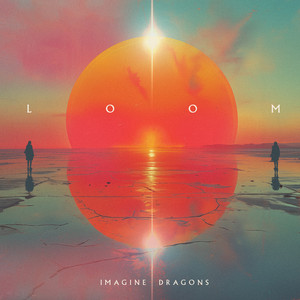
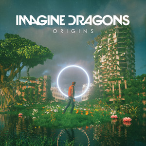
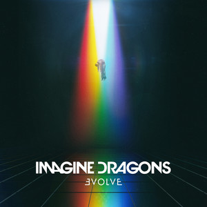
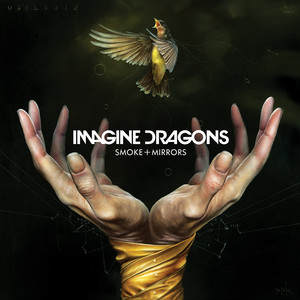
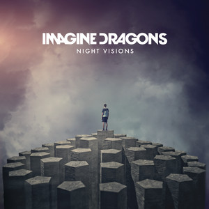

LOOM is Imagine Dragons most recent album. Released June 28, 2024, this album marked many milestones, including the bands shortest album at only 9 tracks, first albun post-drummers department, and, in my opinion, bands best album.
Reviews are mixed, the people who love it REALLY love it, and the people that don't REALLY don't.


Mercury (Acts 1 & 2) is Imagine Dragons first and currently only double album. Because of this, it is by far their longest album by a very large margin. Released on July 1, 2022, the album spans 32 tracks (14 in Act 1, 18 in Act 2) and is their darkest album as well (main theme of death and the aftermath of it).
Mercury's reviews are slightly below average but generally mixed.

Origins is Imagine Dragons most controveral album. Released November 9, 2018, fans were unsure whether it was good or bad. Debates still show in the community, but as time has passed, it's leaning more towards positive.
Supprisingly, while controversal among fans, Origins is one of their most positively rated albums.

ƎVOLVE is Imagine Dragons most popular album by far. 2 of their 3 most popular songs of all time originate from this masterpiece (being Believer and Thunder) and it is the most widely recognised album outside of the fanbase.
While popular, reviews are mixed, leaning from mixed to slightly negative.

Smoke + Mirrors is Imagine Dragons most fan-beloved album. It is very underated with many incredible, unknown songs. It is very experimental and one of their more rocky albums. While most fans favourite album, this is one of their least popular albums.
Smoke + Mirrors scores exceptionally in reviews. This is their only album where almost every review is positive.

Night Visions is Imagine Dragons first album. This was a phenominal start to their music career, containing hits like Demons, On Top Of The World and Radioactive. The album contains many songs made for it, as well as plenty that appaired in previous EP's.
Night Visions is generally reviewed positively with some acceptions.